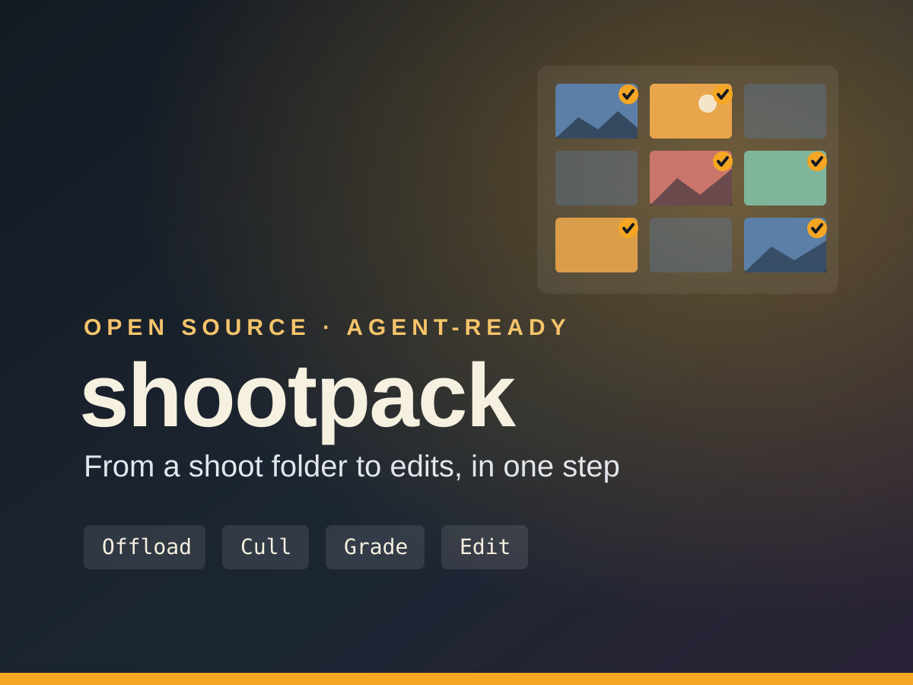

shootpack

Overview
shootpack is the workflow I use to turn a day of shooting into finished edits, written down as code an agent can run. It starts at the card: offload copies every file to a dated archive with SHA-256 verification and only calls a card safe to format when every copy checks out. From there one command inventories the folder, detects each file's camera from its metadata and reads it with a device profile (DJI Mavic 4 Pro, Sony A1 II, Fujifilm X-E4, DJI Osmo 360 II, or a generic fallback), groups exposure brackets, and splits the shoot into sessions named by sun elevation. It auto-culls a varied set of picks and leaves an editable cull file you can override, HDR-merges brackets from the raws, detects each clip's log curve and grades it to Rec.709 with official or fitted LUTs plus your own creative looks, finds the steady camera moves in long takes, and cuts a short video on the beat of a licensed track. Re-running only does what's missing. Every step is a small Python script with its own doc, and the repo ships a skill file and agent docs so an AI agent knows how to run a shoot and where to change the code. Swap in your own devices, looks and rules, and it becomes your own culling and editing agent.
Stack
Features
- Card offload with SHA-256 verification, date-sorted archive and a clear SAFE TO FORMAT signal
- Per-camera device profiles detected from metadata; mixed drone, camera and 360 shoots in one folder
- Auto-cull of a varied set of picks per session, with an editable cull file the pipeline never overwrites
- HDR merges from raw brackets, sun-in-frame detection and full-res plus web exports
- Log-curve detection and Rec.709 grading with official or fitted LUTs and your own creative looks
- Short videos and trailers cut on the beat of a licensed track, in 4K, 1080p and 720p
- Plan mode and re-runs that only do what's missing
- Skill file and agent docs so an AI agent can run shoots and extend the code for your own workflow
Key Technical Challenge
Making mixed-camera shoots behave like one: every file is matched to a device profile from its own metadata, dual-slot duplicates are confirmed by hash, each clip's log curve is measured from its code values rather than trusted from its label, and sessions, picks and the edit span all devices while every clip still gets the right LUT.
Lessons Learned
An agent is only as good as the process it's given. Writing the workflow as small, re-runnable steps with plain-file overrides (a cull.json the agent never overwrites) and a doc per area made it something an AI agent can run and extend safely, instead of a black box. Backups come first: nothing gets edited until the card's copy is verified.